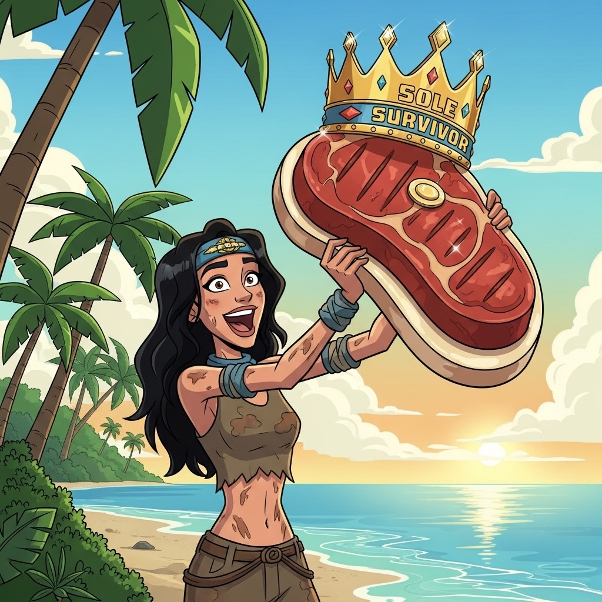
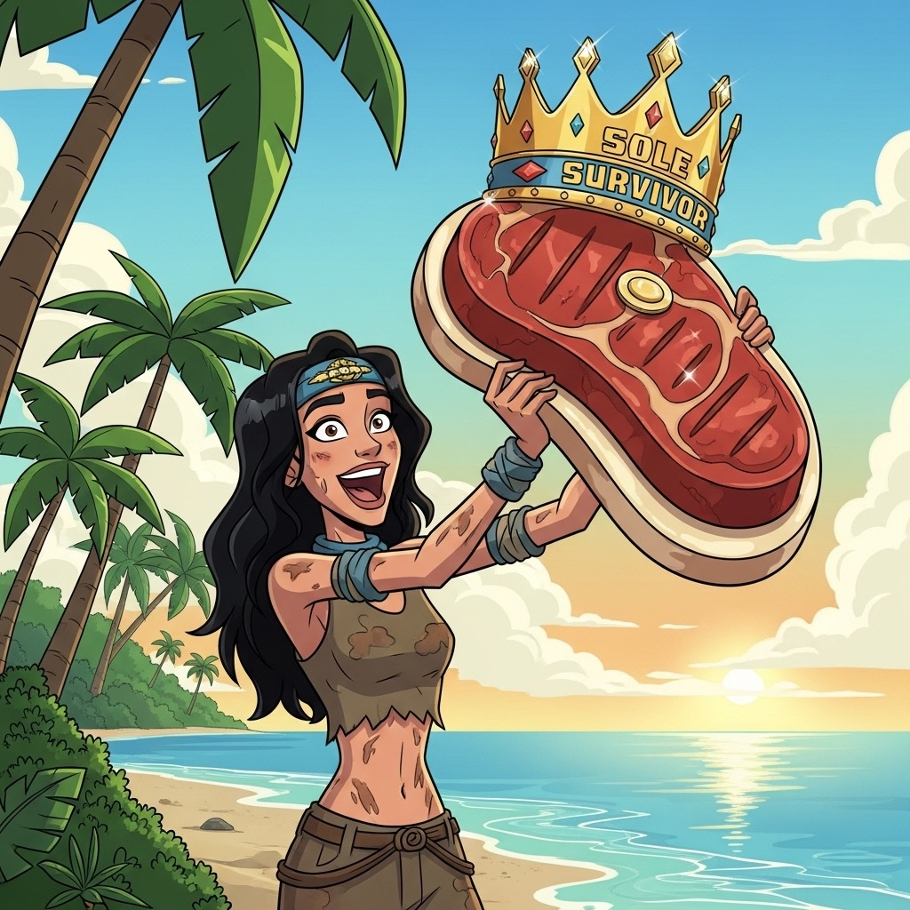

This carefully designed handbook is my early Christmas gift to you as you gear up for the biggest adventure of your life! This is by far the most thought and time I have ever put into a gift for anyone, so if nothing else, this can be like when you get a book from someone and you feel obligated to read it, but in the end the pictures are the most entertaining part of it all! (I'll get you the download links for when you post your Survivor DUMP.)
It is broken down into 6 pages after this one, each page containing information I thought might be useful, vaguely interesting, or extremely important to remember. I used my world class expertise combined with Google Gemini to create all of the resources you find below. I adjusted the style of writing to try and make it more enjoyable to go through.
- Personalize Survivor Quebec NotebookLM: Instructions below.
- Pre-Game Preparation: Strategies you can use to prepare from now until your last moments before the game begins
- Meta Game: The level deeper that you will experience, compared to watching on TV
- Phases of the Game: Brief timeline of important events
- Pillars of Survivor: Content surrounding day to day skills and concepts
- End Game: Some ideas to have in your head that you will need to activate by the time you merge.


 
